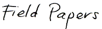
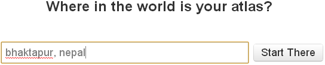

Field Papers Walk Through
Download a PDF Version of this Guide
 is a tool for creating a printable map atlas of anywhere in the world. The idea is that you use it to print the map, you go out into the field, sketch what you see, then come back, take a picture of your map or scan it, and update OpenStreetMap. This walk through will only focus on creating your atlas.
Make Yourself an Atlas
Go to http://fieldpapers.org/ and click on the ‘Make yourself an atlas’ link.
Enter your location in the search box and click ‘Start There’.

You should now see the location you entered in OpenStreetMap.
Now, you can see a zoomed out view of Bhaktapur, but we want to focus on a smaller area. Click on the + button in the top left corner to zoom in.
Each of the rectangles you see represent a page of your atlas. As you zoom in, you’ll want to move your atlas, and you’ll want to resize your atlas accordingly.
If you want to add or remove pages, use the +/- buttons.
In the toolbar near the top of the page, you can customize your map.
Choose landscape or portrait.
Choose the characteristics of your base map.
Once you are happy with the area and structure of your atlas, click the ‘Next’ button.